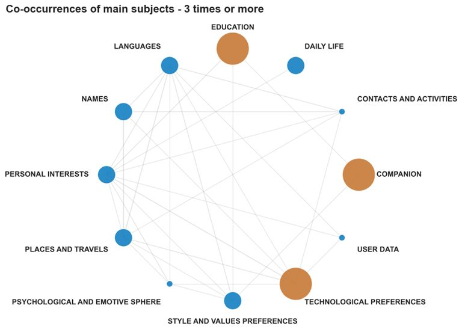

Automated Press Review / La Parola Data
An automated pipeline that transforms Italian news feeds into a structured press review, combining semantic analysis, concept extraction, graph-based interpretation and LLM-assisted narration.
Open project →Data Science · AI Systems · Decision Intelligence
Data Scientist & AI/Data Specialist
I work at the intersection of data science, AI and business context, turning complex information into structured analysis, explainable models and decision-ready narratives.
Based in Milan, Italy · Available for projects and collaborations in Italian or English
I have a background in enterprise IT, data management and business systems, and I now focus on data science, AI and analytics projects that connect technical depth with business understanding.
I am especially interested in how data can help people understand complex environments: operational processes, social and organizational patterns, environmental phenomena, or large flows of information.
A selection of open projects, ordered from the most recent, combining data, models, automation and interpretation.
An automated pipeline that transforms Italian news feeds into a structured press review, combining semantic analysis, concept extraction, graph-based interpretation and LLM-assisted narration.
Open project →
An exploratory project on what users allow ChatGPT to remember, using survey data, semantic clustering, GDPR-oriented classification and network analysis to understand patterns in personal AI memory.
Open project →
A data science project on air quality in Val Lemme, combining pollutant and meteorological data to model PM2.5 and O₃ dynamics through clustering, quantile regression and SHAP-based interpretation.
Open project →The common thread in my work is a genuine interest in understanding and explaining complexity. I like projects where data is not only used to produce an output, but to make a situation clearer: why something happens, what patterns are hidden in it, and how the result can be communicated to people who need to act on it.
In practice, this means starting from the context, looking carefully at the data, choosing methods that fit the problem, and translating the results into a clear interpretation. The framework is simple: understand the situation, model what is useful, and explain it well enough to support better decisions.
Analytics, dashboards, process analysis, machine learning opportunities and improvement projects.
IT and AI strategy, lightweight AI governance, RAG systems and operational data analysis.
Enterprise systems, Power BI, Industry 4.0, segmentation, explainable ML and international IT operations.
Python, pandas, scikit-learn, CatBoost, XGBoost, LightGBM, SHAP, clustering, quantile regression.
LLM APIs, RAG, LangChain, LangGraph, embeddings, transformers, semantic search.
Power BI, Matplotlib, Seaborn, dashboards, data storytelling and executive reporting.
SQL, relational databases, ETL, data quality, Microsoft 365, IT governance, cybersecurity, Industry 4.0.
Executive Master in Data Science · Rome Business School · ongoing
Professional Master — Data Science, Big Data & AI for Finance · 24ORE Business School
Bachelor's Degree in Computer Engineering · Università degli Studi di Genova
Additional training · IBM AI Engineering, MIT Professional Education, SDA Bocconi, LSE, Hugging Face and AI agents programs.
For professional conversations, collaborations or more details about my work, you can find me on LinkedIn and GitHub.